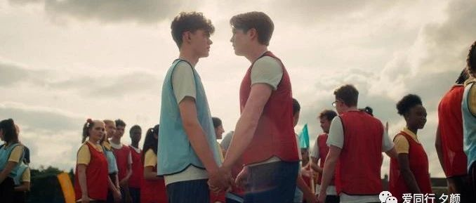

心跳漏一拍：一部适合宅在家看的小甜剧
原创
咖灰
爱同行 夕颜
2022年05月06日 20:07
广东
最近宜囤货：囤吃的，囤片，囤精神食粮。
然后瞄了一眼年轻人在看什么(？) 偶然发现了这部英剧Heartstopper（心跳漏一拍），很喜欢。
。
( •̀∀•́ )。
虽然会被女生们称作腐剧
，但其实很有正面的教育意义和现实感。导演拍过《黑镜》《神探夏洛克》等知名作品，操刀这种学生时代甜蜜小作品也不在话下，顺便在叙事手法上还胜出了不少泰剧同类作品。
这部剧全长8集，总共只有4小时多。角色
包含了Lesbian
，Gay，Bisexual，Transgender，集齐了LGBT社区了四种人物的符号卡，情节清新而又不落俗套。
当我看到预告片时，我没想到这部每集30分钟的电视剧会如此可爱，以至于让我在床上翻来覆去!
这部剧最大的特点之一是导演对
"温情戏"的理解和高超的驾驭能力，色彩鲜艳的年轻人故事，，有梦幻般的动画涂鸦，每一帧都美丽得可以用作墙纸。
两个主要人物和其他演员都很有特点。
尼克，橄榄球队的王牌
选手，真诚、正直、友好，尽管有困惑，但他一直忠于自己的内心，接受自己。
查理看似柔弱，其实他很勇敢，在故事的开始，我们了解到他已经公开出柜，在学校遭受了近一年的欺凌。
主要人物和次要人物都很丰满，并在逻辑上相互补充。
一对蕾丝情侣小姐姐非常可爱，她们的出柜给予了尼克勇敢面对自己的勇气。
转校的的trans小姐姐（看介绍
，
扮演者也是一位trans）真的很美
，放图～
《心跳漏一拍》展现了年少爱情时的纯真和焦虑，但本剧并不只是秀
甜蜜
和yy
，剧情对于青少年性少数群体初建自己性取向认同时所经历的怀疑、困惑、迷茫，有着深入的刻画。
该剧的
贴心设计还表现在每集的标题，比如后面几集的《友谊》，《霸凌》等等涉及性少数群体面临的真实问题。他们需要来自周围人们的理解。
虽然故事对霸凌的描写相对含蓄，但在许多对抗中，你仍能感受到身为异类的窒息感，而且总是令人担心情节会急转直下，滑向沉重的青春残酷。但幸运的是，主角拥有支持和鼓励他们的好友，正面的处理方式和态度，即使那些困扰也能在最大程度得到解决，呈现出美好结果。
负责排雷的小编向大家保证，
这是一部happy
ending的剧！
整部作品洋溢着青春阳光的暖色调，视觉上和感觉上都如此。我们时不时的会被尼克和查理的交往甜到，从剧中感受到积极向上的能量。
在校园里
出柜前后的待遇差异，主角尼克向他母亲出柜的对话，都令人印象深刻。当他担心母亲不能理解自己时，妈妈说：“感谢你愿意告诉我你真实的想法。如果我是一个你不能坦诚相待的妈妈，那我真的是一个失败的母亲。我爱你，尼克
。”
整部剧向我们传递了贯彻始终的价值观念：
性少数群体需要家庭、朋友和社会的理解和尊重，这些看似普通的东西对他们来说是很珍贵的。
“主流”和“少数”之间的对比是通过橄榄球俱乐部，和查理的小型性少数群体之间的对比呈现的。当原本属于主流的尼克遇到查理时，他才发现真实的自己内心是什么样，
理解到了不能站在欺负别人的“强者”那边随波逐流
。他诚恳面对自己和拥抱爱情，正是该剧中最感人的情节之一。
雨中这一幕的构图非常美
，蓝黄的配色，刚好映衬两个人的衣服和心情，一个人的阳光，另一个人的阴霾。在一个吻之后，整个氛围都被暖色所包围。
爱情就是这样，跟合适的人在一起，可以解除所有的阴霾
。
这部剧是如此的甜美和青春，
令人不自禁地姨母笑，看多现实的苦涩，或许也该轻松享受一下这份简单、愉悦的美好体验!
即使不再年轻（如果你们仍然年轻，就更好啦），也祝福各位都能遇到一个让你们心动的人。
在
这部剧中，我只希望自己是那个在一旁阅读出柜名人回忆录的爱读书的小胖，分享朋友的快乐 (｡･ω･｡)ﾉ♡
这真的是一部许多人口耳相传的新的优质作品。
如果你也看过，希望跟我们一起分享讨论喔！
关注我们 了解更多